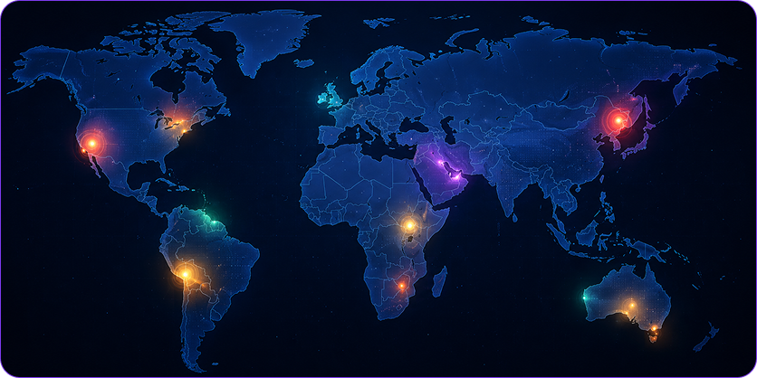

Monitorando a Terra através do espaço.
Plataforma inteligente que utiliza satélites e inteligência artificial para monitorar eventos ambientais em tempo real, gerando alertas e apoiando ações de prevenção.

Plataforma inteligente que utiliza satélites e inteligência artificial para monitorar eventos ambientais em tempo real, gerando alertas e apoiando ações de prevenção.
Utilizamos satélites e inteligência artificial para detectar eventos ambientais em tempo real.
Detectamos focos de incêndio em tempo real com alta precisão.
Previsão de chuvas intensas e risco de enchentes urbanas.
Detectamos alterações em áreas florestais para identificar desmatamento.
Análise de índices de seca e impacto na agricultura e recursos hídricos.
Satélites coletam dados em tempo real na Terra.
Inteligência Artificial analisa padrões e identifica riscos.
Alertas aéreos e automáticos sobre ameaças climáticas.
Informações que salvam vidas e ajudam na tomada de decisão.
Satélites Ativos
24Áreas Monitoradas
1.237.880 km²Alertas Hoje
12Precisão da IA
98.6%
Foco de Queimada
Pantanal - MT2 min atrás
Risco de Enchente
Salvador - BA15 min atrás
Desmatamento
Amazonas - AM1h atrás
Tecnologia espacial trabalhando por um futuro mais seguro e sustentável para todos.
km² monitorados
Alertas emitidos
Vidas impactadas
Monitoramento Global